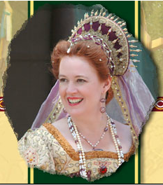

Casa de Wine
MAY
Antique Tractor 4 x 4 Pull
Saturday May 23 - Sunday May 24
Come watch the State's best pullers pull some of the oldest and newest tractors and 4 x 4s.
Sponsored by the Valley Tractor Pull Association.
www.vtpapullers.org/
Casa de Fruta's Tractor Pull Arena - Gate 6
Entrance is free
JUNE
7th Annual Joseph Zanger Memorial & Reunion Dance
Sunday, June 7th - 12pm to 5pm
In remembrance of our dear departed friend Joseph Zanger
we will reunite with old friends to
commemorate the great Sunday afternoon country-dance parties.
All are invited to dance and
socialize at the country park stage area. Music provided by Pat Eodice.
Please no pets.
Country Park- Gate 6 - Donation is requested
JULY
Gilroy Garlic Festival
Friday, Saturday & Sunday July 24th, 25th and 26th (annual event)
Spend the Garlic Festival weekend at Casa de Fruta Orchard RV Resort or The Inn at Casa de Fruta. We’re only 13 miles from the festival grounds. Stay with us and avoid the driving and parking hassle by riding the ‘Garlic Shuttle’ to and from the Festival grounds. Discounted tickets also available at check-in. After spending the day at the festival, come back to Casa de Fruta and relax under the stars! http://gilroygarlicfestival.com
SEPTEMBER
Arts, Crafts & Music Festival
Saturday thru Monday September 5th, 6th & 7th
Beautiful handmade crafts will be sold at the Casa de Sweets Pavilion. This FREE three-day event will feature pottery, leatherwork, wood crafts, stained glass, dolls and much, much more. There will be entertainment throughout the day. Come join the fun and stay for our other attractions. Great food and entertainment are always at Casa de Fruta. 9:00am to 6:00pm - Casa de Sweets Pavilion
Northern California Renaissance Faire
Saturdays and Sundays Only, 10 a.m. to 6 p.m, September 19th to October 18th
 Step back in time to Renaissance Europe and enjoy hearty ales, fine foods and handmade crafts. Hundreds of costumed performers roam the streets and act on 5 different stages. Over 150 craft booths, rides and activities. Don't miss our exciting Tournament of Horses. For information and tickets, visit the Renaissance Faire website at www.norcalrenfaire.com Casa de Fruta – Gate 6
OCTOBER
Pumpkin Junction
October 1 to October 31 - 8:00 am -8:00 pm (annual event)
Experience Pumpkin Junction on a Field Trip or on a family outing. Your children will make lasting memories as they enjoy the Harvest season and explore all that Casa de Fruta has to offer! Come and find the perfect pumpkin, mine for gemstones at Casa de Miner's Sluice, ride Casa de Choo Choo and take a spin on Casa de Carousel! For more info call 1-800-543-1702 or emailinfo@casadefruta.com Fruit Stand Parking Area
NOVEMBER
Passport Weekend
(Presented by Wineries of Santa Clara Valley)
Saturday and Sunday, November 14th & 15th
Experience Pumpkin Junction on a Field Trip or on a family outing. Your children will make lasting memories as they enjoy the Harvest season and explore all that Casa de Fruta has to offer! Come and find the perfect pumpkin, mine for gemstones at Casa de Miner's Sluice, ride Casa de Choo Choo and take a spin on Casa de Carousel! For more info call 1-800-543-1702 or emailinfo@casadefruta.com Fruit Stand Parking Area
DECEMBER
New Year's Eve Party
Thursday, December 31 (annual event)
A tradition at Casa de Fruta is the gala New Year's Eve Party. Catered dinner and dancing with champagne and party favors make it an unforgettable start to the new year. With our Inn and RV Park just steps away from the activities, you can spend a leisurely New Year's at Casa de Fruta without having to drive. Ask about our special RV packages. (800) 548-3813 Casa de Fruta Music Hall - 7:00 pm - 12:15 am
For information on reserving Casa de Fruta's Country Park for corporate picnics, weddings, family reunions or other events, click here